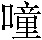
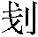
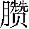

第十四回 赤发鬼醉卧灵官殿 晁天王认义东溪村
诗曰：
勇悍刘唐命运乖，灵官殿里夜徘徊。
偶逢巡逻遭羁缚，遂使英雄困草莱。
卤莽雷横应堕计，仁慈晁盖独怜才。
生辰纲贡诸珍贝，总被斯人送将来。
话说当时雷横来到灵官殿上，见了这条大汉睡在供桌上，众土兵向前，把条索子绑了，捉离灵官殿来。天色却早是五更时分。雷横道：”我们且押这厮去晁保正庄上，讨些点心吃了，却解去县里取问。”一行众人却都奔这保正庄上来。
原来那东溪村保正姓晁名盖，祖是本县本乡富户，平生仗义疏财，专爱结识天下好汉。但有人来投奔他的，不论好歹，便留在庄上住；若要去时，又将银两赍助他起身。最爱刺枪使棒，亦自身强力壮，不娶妻室，终日只是打熬筋骨。郓城县管下东门外有两个村坊，一个东溪村，一个西溪村，只隔着一条大溪。当初这西溪村常常有鬼，白日迷人下水在溪里，无可奈何。忽一日，有个僧人经过，村中人备细说知此事。僧人指个去处，教用青石凿个宝塔，放于所在，镇住溪边。其时西溪村的鬼，都赶过东溪村来。那时晁盖得知了大怒，从溪里走将过去，把青石宝塔独自夺了过来东溪边放下，因此人皆称他做托塔天王。晁盖独霸在那村坊，江湖上都闻他名字。
却早雷横并土兵押着那汉，来到庄前敲门。庄里庄客闻知，报与保正。此时晁盖未起，听得报是雷都头到来，慌忙叫开门。庄客开得庄门，众土兵先把那汉子吊在门房里，雷横自引了十数个为头的人，到草堂上坐下。晁盖起来接待，动问道：”都头有甚公干到这里？”雷横答道：”奉知县相公钧旨，着我与朱仝两个引了部下土兵，分投下乡村各处巡捕贼盗。因走得力乏，欲得少歇，径投贵庄暂息，有惊保正安寝。”晁盖道：”这个何碍。”一面教庄客安排酒食管侍，先把汤来吃。晁盖动问道：”敝村曾拿得个把小小贼么？”雷横道：”却才前面灵官殿上，有个大汉睡着在那里。我看那厮不是良善君子，以定是醉了。就便着我们把索子缚绑了，本待便解去县里见官，一者忒早些，二者也要教保正知道，恐日后父母官问时，保正也好答应。见今吊在贵庄门房里。”晁盖听了，记在心，称谢道：”多亏都头见报。”少刻庄客捧出盘馔酒食。晁盖喝道：”此间不好说话，不如去后厅轩下少坐。”便叫庄客里面点起灯烛，请都头到里面酌杯。晁盖坐了主位，雷横坐了客席。两个坐定，庄客铺下果品案酒，菜蔬盘馔。庄客一面筛酒，晁盖又叫置酒与土兵众人吃。庄客请众人，都引去廊下客位里管待，大盘酒肉，只管教众人吃。
晁盖一头相待雷横吃酒，一面自肚里寻思：”村中有甚小贼吃他拿了，我且自去看是谁？”相陪吃了五七杯酒，便叫家里一个主管出来：”陪奉都头坐一坐，我去净了手便来。”那主管陪侍着雷横吃酒。晁盖却去里面拿了个灯笼，径来门楼下看时，土兵都去吃酒，没一个在外面。晁盖便问看门的庄客：”都头拿的贼吊在那里？”庄客道：”在门房里关着。”晁盖去推开门，打一看时，只见高高吊起那汉子在里面，露出一身黑肉，下面抓扎起两条黑魆魆毛腿，赤着一双脚。晁盖把灯照那人脸时，紫黑阔脸，鬓边一搭朱砂记，上面生一处黑黄毛。晁盖便问道：”汉子，你是那里人？我村中不曾见有你。”那汉道：”小人是远乡客人，来这里投奔一个人，却把我来拿做贼，我须有分辨处。”晁盖道：”你来我这村中投奔谁？”那汉道：”我来这村里投奔一个好汉。”晁盖道：”这好汉叫做甚么？”那汉道：”他唤做晁保正。”晁盖道：”你却寻他有甚勾当？”那汉道：”他是天下闻名的义士好汉，如今我有一套富贵来与他说知，因此而来。”晁盖道：”你且住，只我便是晁保正。却要我救你，你只认我做娘舅之亲。少刻我送雷都头那人出来时，你便叫我做阿舅，我便认你做外甥。只说四五岁离了这里，今番来寻阿舅，因此不认得。”那汉道：”若得如此救护，深感厚恩。义士提携则个！”正是：
黑甜一枕古祠中，被捉高悬草舍东。
却是刘唐未应死，解围晁盖有奇功。
且说晁盖提了灯笼，自出房来，仍旧把门拽上，急入后厅来见雷横，说道：”甚是慢客。”雷横道：”且是多多相扰，理甚不当。”两个又吃了数杯酒，只见窗子外射入天光来，雷横道：”东方动了，小人告退，好去县画卯1。”晁盖道：”都头官身，不敢久留。若再到敝村公干，千万来走一遭。”雷横道：”却得再来拜望，不须保正分付。请保正免送。”晁盖道：”却罢，也送到庄门口。”两个同走出来，那伙土兵众人，都得了酒食，吃得饱了，各自拿了枪棒，便去门房里解了那汉，背剪缚着带出门外。晁盖见了，说道：”好条大汉！”雷横道：”这厮便是灵官庙里捉的贼。”说犹未了，只见那汉叫一声：”阿舅，救我则个！”晁盖假意看他一看，喝问道：”兀的这厮不是王小三么？”那汉道：”我便是，阿舅救我。”众人吃了一惊。雷横便问晁盖道：”这人是谁？如何却认得保正？”晁盖道：”原来是我外甥王小三。这厮如何却在庙里歇？乃是家姐的孩儿，从小在这里过活，四五岁时随家姐夫和家姐上南京去住，一去了十数年。这厮十四五岁又来走了一遭，跟个本京客人来这里贩枣子，向后再不曾见面。多听得人说，这厮不成器，如何却在这里？小可本也认他不得，为他鬓边有这一搭朱砂记，因此影影认得。”
晁盖喝道：”小三！你如何不径来见我，却去村中做贼？”那汉叫道：”阿舅，我不曾做贼！”晁盖喝道：”你既不做贼，如何拿你在这里？”夺过土兵手里棍棒，劈头劈脸便打。雷横并众人劝道：”且不要打，听他说。”那汉道：”阿舅息怒，且听我说。自从十四五岁时来走了这遭，如今不是十年了？昨夜路上多吃了一杯酒，不敢来见阿舅，权去庙里睡得醒了，却来寻阿舅。不想被他们不问事由，将我拿了。却不曾做贼。”晁盖拿起棍来又要打，口里骂道：”畜生！你却不径来见我，且在路上贪

这口黄汤。我家中没得与你吃，辱没杀人！”雷横劝道：”保正息怒，你令甥本不曾做贼。我们见他偌大一条大汉，在庙里睡得跷蹊2，亦且面生，又不认得，因此设疑，捉了他来这里。若早知是保正的令甥，定不拿他。”唤土兵：”快解了绑缚的索子，放还保正。”众土兵登时解了那汉。雷横道：”保正休怪！早知是令甥，不致如此。甚是得罪！小人们回去。”晁盖道：”都头且住，请入小庄，再有话说。”雷横放了那汉，一齐再入草堂里来。晁盖取出十两花银，送与雷横道：”都头休嫌轻微，望赐笑留。”雷横道：”不当如此。”晁盖道：”若是不肯收受时，便是怪小人。”雷横道：”既是保正厚意，权且收受，改日却得报答。”晁盖叫那汉拜谢了雷横。晁盖又取些银两赏了众土兵，再送出庄门外。雷横相别了，引着土兵自去。
晁盖却同那汉到后轩下，取几件衣裳与他换了，取顶头巾与他带了，便问那汉姓甚名谁，何处人氏。那汉道：”小人姓刘名唐，祖贯东潞州人氏，因这鬓边有这搭朱砂记，人都唤小人做赤发鬼。特地送一套富贵来与保正哥哥。昨夜晚了，因醉倒在庙里，不想被这厮们捉住，绑缚了来。正是：有缘千里来相会，无缘对面不相逢。今日幸得到此，哥哥坐定，受刘唐四拜。”拜罢，晁盖道：”你且说送一套富贵与我，见在何处？”刘唐道：”小人自幼飘荡江湖，多走途路，专好结识好汉，往往多闻哥哥大名，不期有缘得遇。曾见山东、河北做私商的，多曾来投奔哥哥，因此刘唐敢说这话。这里别无外人，方可倾心吐胆对哥哥说。”晁盖道：”这里都是我心腹人，但说不妨。”刘唐道：”小弟打听得北京大名府梁中书，收买十万贯金珠宝贝玩器等物，送上东京与他丈人蔡太师庆生辰。去年也曾送十万贯金珠宝贝，来到半路里，不知被谁人打劫了，至今也无捉处。今年又收买十万贯金珠宝贝，早晚安排起程，要赶这六月十五日生辰。小弟想此是一套不义之财，取而何碍！便可商议个道理，去半路上取了，天理知之，也不为罪。闻知哥哥大名，是个真男子，武艺过人。小弟不才，颇也学得本事，休道三五个汉子，便是一二千军马队中，拿条枪也不惧他。倘蒙哥哥不弃时，献此一套富贵，不知哥哥心内如何？”晁盖道：”壮哉！且再计较。你既来这里，想你吃了些艰辛，且去客房里将息少歇。暂且待我从长商议，来日说话。”晁盖叫庄客引刘唐廊下客房里歇息。庄客引到房中，也自去干事了。
且说刘唐在房里寻思道：”我着甚来由苦恼这遭，多亏晁盖完成，解脱了这件事。只叵奈雷横那厮，平白骗了晁保正十两银子，又吊我一夜。想那厮去未远，我不如拿了条棒赶上去，齐打翻了那厮们，却夺回那银子，送还晁盖，他必然敬我。此计大妙。”刘唐便出房门，去枪架上拿了一条朴刀，便出庄门，大踏步投南赶来。此时天色已明，但见：
北斗初横，东方渐白。天涯曙色才分，海角残星暂落。金鸡三唱，唤佳人傅粉施朱；宝马频嘶，催行客争名竞利。牧童樵子离庄，牝牡牛羊出圈。几缕晓霞横碧汉，一轮红日上扶桑。
这赤发鬼刘唐挺着朴刀，赶了五六里路，却早望见雷横引着土兵，慢慢地行将去。刘唐赶上来，大喝一声：”兀那都头不要走！”雷横吃了一惊，回过头来，见是刘唐拈着朴刀赶来。雷横慌忙去土兵手里夺条朴刀拿着，喝道：”你那厮赶将来做甚么？”刘唐道：”你晓事的，留下那十两银子还了我，我便饶了你。”雷横道：”是你阿舅送我的，干你甚事！我若不看你阿舅面上，直结果了你这厮性命，

地3问我取银子！”刘唐道：”我须不是贼，你却把我吊了一夜，又骗我阿舅十两银子。是会的4将来还我，佛眼相看。你若不还，我叫你目前流血。”雷横大怒，指着刘唐大骂道：”辱门败户的谎贼，怎敢无礼！”刘唐道：”你那诈害百姓的腌
泼才，怎敢骂我！”雷横又骂道：”贼头贼脸贼骨头，必然要连累晁盖。你这等贼心贼肝，我行5须使不得！”刘唐大怒道：”我来和你见个输赢。”拈着朴刀，直奔雷横。雷横见刘唐赶上来，呵呵大笑，挺手中朴刀来迎。两个就大路上厮并。但见：云山显翠，露草凝珠。天色初明林下，晓烟才起村边。一来一往，似凤翻身；一撞一冲，如鹰展翅。一个照搠尽依良法，一个遮拦自有悟头。这个丁字脚，抢将入来；那个四换头，奔将进去。两句道：虽然不上凌烟阁，只此堪描入画图。
当时雷横和刘唐就路上斗了五十馀合，不分胜败。众土兵见雷横赢不得刘唐，却待都要一齐上并他，只见侧首篱门开处，一个人掣两条铜链，叫道：”你们两个好汉且不要斗！我看了多时，权且歇一歇，我有话说。”便把铜链就中一隔。两个都收住了朴刀，跳出圈子外来，立住了脚。看那人时，似秀才打扮：戴一顶桶子样抹眉梁头巾，穿一领皂沿边麻布宽衫，腰系一条茶褐銮带，下面丝鞋净袜；生得眉清目秀，面白须长。这秀才乃是智多星吴用，表字学究，道号加亮先生，祖贯本乡人氏。曾有一首《临江仙》，赞吴用的好处：
万卷经书曾读过，平生机巧心灵。六韬三略究来精。胸中藏战将，腹内隐雄兵。 谋略敢欺诸葛亮，陈平岂敌才能。略施小计鬼神惊。名称吴学究，人号智多星。
当时吴用手提铜链，指着刘唐叫道：”那汉且住！你因甚和都头争执？”刘唐光着眼6看吴用道：”不干你秀才事。”雷横便道：”教授7不知，这厮夜来赤条条地睡在灵官殿里，被我们拿了这厮，带到晁保正庄上，原来却是保正的外甥。看他母舅面上，放了他。晁天王请我们吃酒了，送些礼物与我。这厮瞒了他阿舅，直赶到这里问我取。你道这厮大胆么？”
吴用寻思道：”晁盖我都是自幼结交，但有些事，便和我相议计较。他的亲眷相识，我都知道，不曾见有这个外甥，亦且年甲也不相登，必有些跷蹊。我且劝开了这场闹，却再问他。”吴用便道：”大汉休执迷。你的母舅与我至交，又和这都头亦过得好。他便送些人情与这都头，你却来讨了，也须坏了你母舅面皮。且看小生面，我自与你母舅说。”刘唐道：”秀才，你不省得这个。不是我阿舅甘心与他，他诈取了我阿舅的银两。若是不还我，誓不回去。”雷横道：”只除是保正自来取，便还他，却不还你。”刘唐道：”你屈冤人做贼，诈了银子，怎地不还？”雷横道：”不是你的银子，不还，不还！”刘唐道：”你不还，只除问得我手里朴刀肯便罢。”吴用又劝：”你两个斗了半日，又没输赢，只管斗到几时是了？”刘唐道：”他不还我银子，直和他拚个你死我活便罢。”雷横大怒道：”我若怕你，添个土兵来并你，也不算好汉。我自好歹搠翻你便罢。”刘唐大怒，拍着胸前叫道：”不怕，不怕！”便赶上来。这边雷横便指手划脚，也赶拢来。两个又要厮并，这吴用横身在里面劝，那里劝得住。
刘唐拈着朴刀，只待钻将过来。雷横口里千贼万贼骂，挺起朴刀，正待要斗。只见众土兵指着：”保正来了。”刘唐回身看时，只见晁盖披着衣裳，前襟摊开，从大路上赶来，大喝道：”畜生不得无礼！”那吴用大笑道：”须是保正自来，方才劝得这场闹。”晁盖赶得气喘，问道：”怎的赶来这里斗朴刀？”雷横道：”你的令甥拿着朴刀赶来，问我取银子。小人道不还你，我自送还保正，非干你事。他和小人斗了五十合，教授解劝在此。”晁盖道：”这畜生！小人并不知道，都头看小人之面请回，自当改日登门陪话。”雷横道：”小人也知那厮胡为，不与他一般见识。又劳保正远出。”作别自去，不在话下。
且说吴用对晁盖说道：”不是保正自来，几乎做出一场大事。这个令甥端的非凡，是好武艺。小生在篱笆里看了，这个有名惯使朴刀的雷都头，也敌不过，只办得架隔遮拦。若再斗几合，雷横必然有失性命，因此小生慌忙出来间隔了。这个令甥从何而来？往常时，庄上不曾见有。”晁盖道：”却待正要来请先生到敝庄商议句话，正欲使人来，只见不见了他，枪架上朴刀又没寻处。只见牧童报说：’一个大汉，拿条朴刀，望南一直赶去。’我慌忙随后追得来，早是得教授谏劝住了。请尊步同到敝庄，有句话计较计较。”
那吴用还至书斋，挂了铜链在书房里，分付主人家道：”学生来时，说道先生今日有干，权放一日假。”拽上书斋门，将锁锁了，一同晁盖、刘唐，直到晁家庄上。晁盖竟邀入后堂深处，分宾而坐。吴用问道：”保正，此人是谁？”晁盖道：”江湖上好汉，此人姓刘名唐，是东潞州人氏。因有一套富贵，特来投奔我。夜来他醉卧在灵官庙里，却被雷横捉了，拿到我庄上，我因认他做外甥，方得脱身。他说有北京大名府梁中书，收买十万贯金珠宝贝，送上东京与他丈人蔡太师庆生辰，早晚从这里经过。此等不义之财，取之何碍！他来的意，正应我一梦。我昨夜梦见北斗七星，直坠在我屋脊上，斗柄上另有一颗小星，化道白光去了。我想星照本家，安得不利？今早正要求请教授商议，不想又是这一套。此一件事若何？”
吴用笑道：”小生见刘兄赶得来跷蹊，也猜个七八分了。此一事却好，只是一件，人多做不得，人少又做不得。宅上空有许多庄客，一个也用不得。如今只有保正、刘兄、小生三人，这件事如何团弄8？便是保正与兄十分了得，也担负不下这段事。须得七八个好汉方可，多也无用。”晁盖道：”莫非要应梦之星数？”吴用便道：”兄长这一梦不凡，也非同小可，莫非北地上再有扶助的人来？”吴用寻思了半晌，眉头一纵，计上心来。说道：”有了，有了！”晁盖道：”先生既有心腹好汉，可以便去请来，成就这件事。”
吴用不慌不忙，叠两个指头，言无数句，话不一席，有分教：芦花丛里泊战船，却似打鱼船；荷叶乡中聚义汉，翻为真好汉。正是：指麾说地谈天口，来诱拿云捉雾人。毕竟智多星吴用说出甚么人来，且听下回分解。
《第十四回 赤发鬼醉卧灵官殿 晁天王认义东溪村》读后感
接上回。雷横将那个暴露狂绑了，准备带到晁保正庄上休息吃点东西再回官府。晁保正就是晁盖，外号托塔天王。因其仗义疏财，江湖上知名度很高。雷横和晁盖见面寒暄后就开始喝酒吃肉，晁盖好奇心起，偷偷去看这个被抓的人长啥样。结果这人说自己名叫刘唐，外号赤发鬼，是专门来投奔晁盖的，而且要给晁盖送一笔横财。晁盖心想既然是慕自己名而来，还有钱，当然要救他。于是导演了一场舅甥多年不见，意外相遇的戏码。雷横一看，只好放人。晁盖也是上道的，在后厅给了十两银子贿赂一下，这点和柴进很像，有钱真好。
但刘唐这个草莽英雄看到了晁盖为了自己平白赠送了十两银子给雷横，心中很是不平，竟然直接追上去要钱。大哥，你就不算一下生辰纲十万贯金珠宝贝玩器值多少钱吗？真的是脑子不好使。
刘唐和雷横大战五十回合，不分胜负，此时智多星吴用出来劝架。但秀才的面子明显不好使，刘唐根本不听。正当双方要再次动手之际，还是晁盖踩着拖鞋跑来后才作罢。
刘、吴、晁回到晁盖庄子上，开始商讨如何劫取生辰纲，晁盖说自己做了一个北斗七星之梦，吴用就说要有七位好汉相助，真是扯蛋，一笑而过。